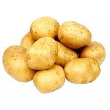
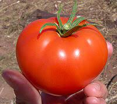

Οι πατάτες είναι το ιδανικό συνοδευτικό για κάθε φαγητό. Ωστόσο μπορούν να σταθούν και μόνες τους ως το τέλειο γεύμα. Συνδυάζονται με τα πάντα και μπορούν να μαγειρευτούν με ό,τι τρόπο μπορείτε να φανταστείτε. Μπορεί να έχουν αρκετές θερμίδες, αλλά με τους κατάλληλους συνδυασμούς μπορεί να μην είναι και τόσο.
Σας έχουμε συγκεντρώσει μερικές ιδέες για το πώς να μαγειρέψετε τις πατάτες, εύκολα, γρήγορα και πιο υγιεινά. Αντικαθιστώντας κάποια υλικά, μπορεί μια κλασική αρκετά θερμιδογόνα συνταγή να γίνει πιο ελαφριά.

- patates
- Είναι φυτό ιθαγενές των υψιπέδων του Μεξικού, του Περού, της Χιλής και της Κολομβίας, περιοχές όπου ζούσαν Ινδιάνοι, Ίνκας, Αζτέκοι. Μεταφέρθηκε από τη Νότιο Αμερική στην Ισπανία από Ισπανούς εξερευνητές και γρήγορα επεκτάθηκε σε ολόκληρη την Ευρώπη.
- Η πατάτα γνωστή και ως γεώμηλο, είναι φυτό που ανήκει στην οικογένεια των Στρυχνοειδών. Καλλιεργείται για τους εδώδιμους κονδύλους της, οι οποίοι είναι πλούσιοι σε άμυλο και αποτελούν τροφή μεγάλης θρεπτικής αξίας
Τομάτα, ντομάτα, τοματίνια, ντοματάκια...: Η ζήτηση αυξάνεται, η ποιότητα και η γεύση φθίνουν. Τι ακριβώς συμβαίνει με το πιο δημοφιλές ζαρζαβατικό της Ελλάδας;
- ntomates
- Η τομάτα, ή αλλιώς ντομάτα ή ντοματιά είναι φυτό της Ζει μόνο μερικά χρόνια και συνήθως καλλιεργείται ως μονοετές φυτό. Τυπικά φτάνει τα 3-4 μ. ύψος, αλλά δεν έχει αρκετά ανθεκτικό βλαστό και στηρίζεται σε άλλα φυτά.
- Τα φύλλα έχουν μήκος 10-25 εκ. και είναι σύνθετα, αποτελούμενα από 5-9 μικρότερα φύλλα το καθένα μέχρι και 8 εκ. μακρύ με πριονοειδή περιφέρεια. Τόσο ο βλαστός του φυτού όσο και τα φύλλα φέρουν τρίχωμα. οικογένειας των Στρυχνοειδών,ιθαγενές της Κεντρικής και Νοτίου Αμερικής, από το Μεξικό μέχρι το Περού.
